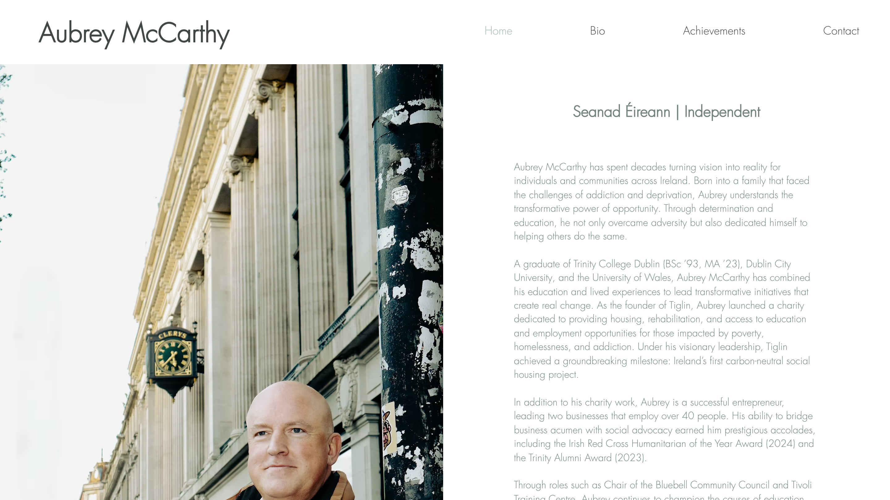
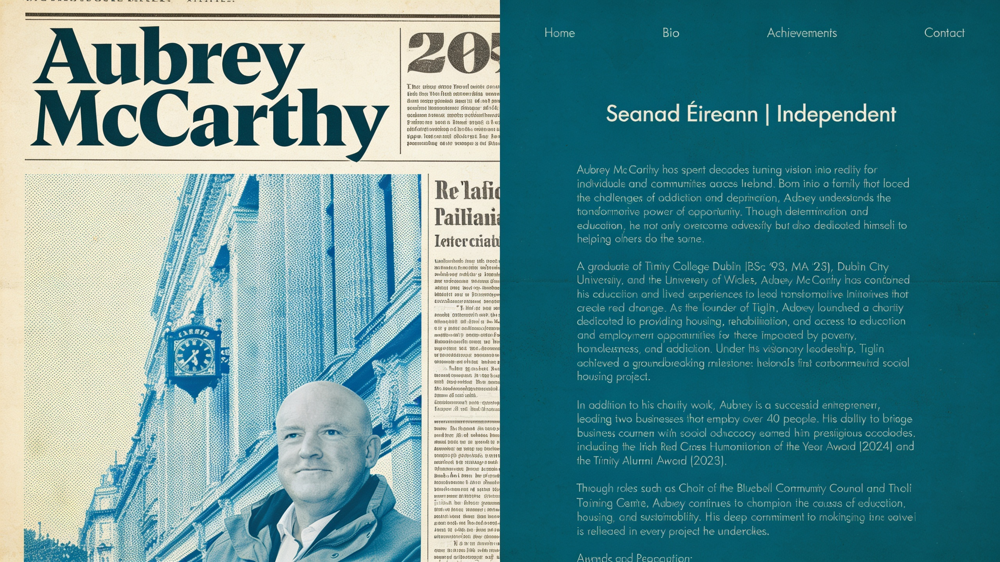

See the direction before you pick it
Choosing a look by talking about it is a bad way to choose a look. Everyone nods at "warm, human, a bit editorial" and everyone is picturing something different. This turns a Pinterest pin into a picture of your actual site in that world, in about two minutes, for about three cents. Then you argue about something real.
A pin goes in, your brand comes out
You find a pin. Any pin. A film still, an old campaign poster, a magazine spread, someone else's website. You paste it to Claude Code and say what you want. It pulls the image down, reads the aesthetic out of it, and generates your brand living inside it.
It does two different things, and they are worth keeping straight in your head because they work in opposite directions.
| Surface | What it does |
|---|---|
| Homepage | Takes a screenshot of your real, live homepage and re-renders it in the pin's look. Same layout, same nav, same headline, same photo of you. New world. This is the one that makes people sit up, because they are looking at their own page. |
| Billboard | Generates a fresh cinematic scene of the brand in that aesthetic, and lays your real headline over it. Nothing is being restyled here. It is being invented. |
Here is the homepage one, run on a real site. The pin was a 1960 Kennedy campaign poster. Nobody redesigned anything. The site is untouched. This is a photograph of a possibility.


A moodboard asks someone to do the imagining. This does the imagining for them. The argument stops being "do you like this aesthetic" and starts being "do you want to be this", which is the argument you actually wanted to have.
Install it
Unzip the kit into your project so it sits at exactly this path:
your-project/
.claude/
skills/
pinterest/
SKILL.md
SETUP.md
requirements.txt
scripts/That is the whole installation. The folder being called pinterest, with a SKILL.md directly inside it, is how Claude Code finds it. There is no config file, no registration step, nothing to switch on. If you want it in every project instead of just this one, put it at ~/.claude/skills/pinterest/ instead.
Restart Claude Code, type /pinterest, and it should be there.
Then install the four packages it leans on. From inside the pinterest folder:
pip3 install -r requirements.txt
python3 -m playwright install chromiumThe second line downloads a browser with no windows, which is what takes the screenshot of your live site and what prints crisp text onto the images. It is a large download and it will look like it has frozen. It has not.
Get your own token
The images are generated by a model called Seedream, which you reach through a service called Replicate. Replicate charges per image. So you need your own account, and your own key, on your own card. Full steps are in SETUP.md, but it is three minutes:
- Make an account at replicate.com and add a card. Pay as you go, no subscription.
- Copy your token from replicate.com/account/api-tokens. It starts with
r8_. - Put
export REPLICATE_API_TOKEN='r8_your_token'at the bottom of~/.zshrc, save, and open a new terminal. The old one will never see it.
Never paste it into a document, a chat, a shared file or a repo. Anyone holding it can spend your money. It lives in one file on your laptop and nowhere else. If you think it has got out, revoke it on that same Replicate page and make a new one. Ten seconds, costs nothing.
What it actually costs
| Thing | Cost |
|---|---|
| Pulling the pin | Free |
| Screenshotting your live site | Free |
| Laying the headline on | Free |
| Generating an image | About 3 cents |
Ten directions, generated two or three times each while you circle in on it, is about a dollar. This is not something to budget for. It is something to be aware of, which is a different thing. The skill is built to stop and show you a gate check before it spends anything, and if it ever generates without showing you that first, it is broken and you should tell it so.
Restyle a homepage
Find a pin. Then say this to Claude Code, in whatever words come naturally:
Take aubreymccarthy.com and show me the homepage in the aesthetic of this pin: [paste the link]
What it will do, in order: screenshot the live page, download the pin, look at both, write you a short read of the aesthetic (palette, type, texture, mood), then stop and show you a gate check with the exact prompt it intends to send. You say yes. Sixty seconds later there is a PNG.
The screenshot of your real page is the important part, and it is the part people get wrong. It goes in as the structure. That is why the nav survives, why the headline survives, why the photograph of you is still the photograph of you. Without it the model just makes a nice picture that has nothing to do with your site, and a nice picture proves nothing.
Make a billboard
Make a billboard in the aesthetic of this pin: [link]. The headline is "A time for greatness".
Two things happen here that are worth knowing about, because they are where all the quality lives.
The empty band. Before it writes a word of the prompt, it decides where the text is going and reserves that part of the frame as deliberately empty. Open sky, a blank wall, a flat field of colour. If you skip this, the model happily fills every inch of the frame and your headline lands across somebody's face.
The text goes on afterwards. The model cannot spell. It will produce something that looks like your headline from across the room and is complete gibberish up close. So the scene is generated first, and then the real type is printed onto it in a browser, sharp, at double resolution. That is why you get two files: the raw scene, and the finished thing. Keep the raw scene. Re-typesetting a new headline onto it is free. Generating it again is not.
Writing the prompt, if you want to write it yourself
You mostly do not have to. But the difference between a flat result and a good one is nearly always in three words, so it is worth knowing what they are.
- Name the inks, not the mood. "Deep petrol teal and aged cream newsprint" beats "vintage feel" every time.
- Say the thing is photographed. "Photographed on location, shot on 35mm film" pulls it out of illustration and into the real world.
- Say what is empty, as a fraction. "The entire top quarter is open sky with nothing in it."
- Say what must not change. "Keep the top navigation bar, the headline and the body paragraph in their current positions, so it still reads as a real website homepage."
What it cannot do, and will not learn to do
This matters more than any of the above, because it is the thing that will embarrass you if you do not know it.
Zoom into the paragraphs on any restyled homepage and the words are mush. Real-looking mush, correct shape, correct rhythm, complete gibberish. That is not a bug in the prompt and no amount of re-prompting fixes it. Image models do not write text, they draw the shape of text.
So be honest with yourself about what you are holding. This is a vibe shot, not a deployable page. It is for a conversation, a positioning deck, a decision between three directions. It is not a design file, it is not a spec, and nobody can build from it. Show it at the size it works at, which is the size a person sees a page at, and do not invite anyone to lean in.
If one headline genuinely has to be perfect, say so, and the skill will print it on crisply afterwards. That part is real type and it holds up to any amount of zooming.
When it goes wrong, which it will
Every one of these has actually happened. None of them are mysterious once you know the cause.
| What you get | What to say |
|---|---|
| Your homepage came back as a poster or a newspaper, complete with fake printed columns | The pin was a poster and the model followed the pin harder than it followed your page. Say: "this is a website, not a poster. No printed columns, no fake headlines." |
| The background got the treatment but the person's face is still in normal colour, like a cutout pasted on | Say: "the portrait itself is fully duotone, with no original colour left in the face." |
| You asked for flat vector and got something soft, rendered and airbrushed | "Flat" is a weak word to a model. Say: "hard-edged flat vector shapes, no gradients, no shading, no soft light." |
| The headline is sitting on someone's face | No empty band was reserved. Go back and reserve one. This is a prompt failure, not bad luck. |
The one case where this method is the wrong tool
If the pin is itself a web design, rather than a photograph or a poster or a film still, this fights you. Image models are very good at scenes and quite bad at interfaces. You will get the colour and the warmth and none of the crispness. When that happens the honest route is to generate the illustration on its own and build the page around it in real HTML, and the skill will tell you so rather than pretending.
The short version
- Unzip the kit to
.claude/skills/pinterest/, run the two install lines, put your Replicate token in~/.zshrc. - Find a pin. Anything. A poster, a film still, a magazine page.
- Say: "show me our homepage in the aesthetic of this pin", and paste the link.
- Read the gate check. That is the moment before it spends money. Say yes.
- Look at what comes back, properly, at the size a person would see it.
- Remember the body copy is gibberish and the picture is an argument, not an artefact.